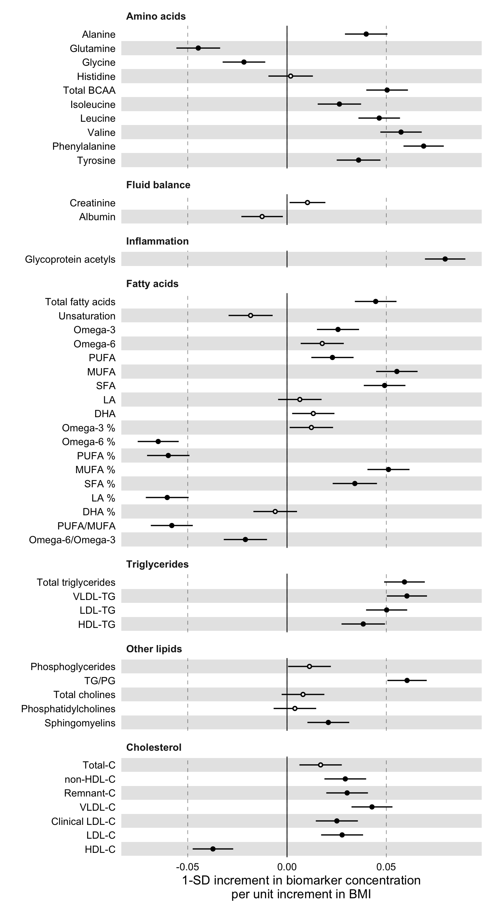
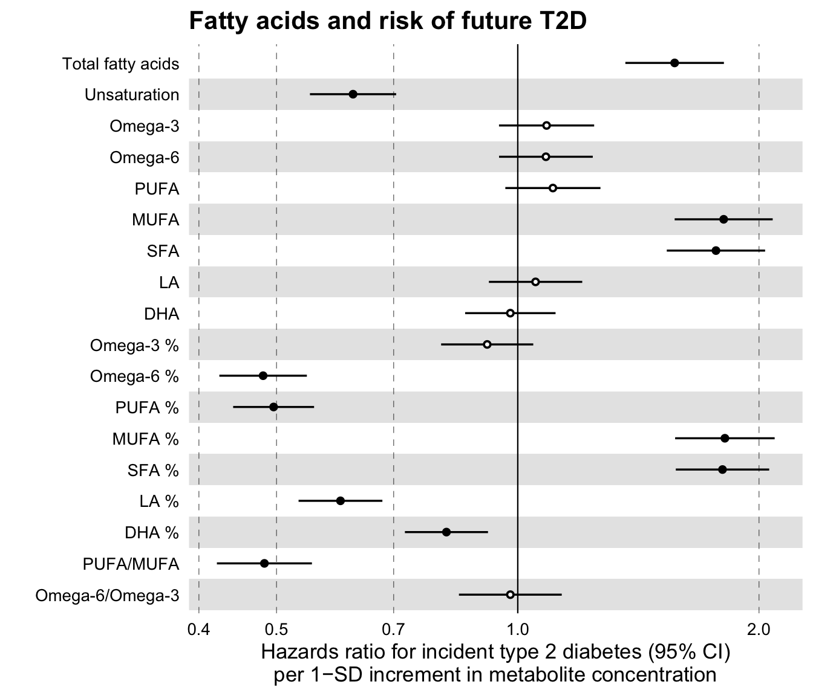

NMR Data Analysis Tutorial
Nightingale Health Ltd.
2019-03-05
nmr-data-analysis-tutorial.RmdOverview
In this tutorial we will go through the basic steps of importing blood metabolomics data into R, joining them with phenotypes or endpoint data, and performing basic epidimiological analysis. The tutorial uses simulated demo datasets from Nightingale’s NMR platform.
Prerequisites
This tutorial uses R, which is free, compiles and runs in most operating systems. If you don’t have it already installed in your system, you may install it by following the instructions here. Additionally, we recommend using the RStudio IDE (Integrated Development Environment), which can be downloaded and installed following the instructions here for the free “RStudio Desktop (Open Source License)”.
You should be able to reproduce easily the code in this tutorial, even with very little knowledge in programming. If you have never programmed in R before and are intrested to learn more, you may find the following book useful, Hands on Programming with R by Garrett Grolemund.
Throughout the tutorial, we will be using the collection of tidyverse R packages and try to abide by their philosophy. You can install the complete tidyverse by typing the following line of code in the R console:
# Install the tidyverse packages
install.packages(tidyverse)
# Attach the tidyverse packages into the current session
library(tidyverse)We also note the usage of the pipe %>% symbol throughout the code of this tutorial. The pipe is a way to write a series of operations on an R object, e.g. a dataset, in an easy-to-read way. As an example, the operation x %>% f(y) effectivly means f(x, y). You can read more on the pipe here.
Overview of Nightingale blood biomarker data
The NMR biomarker concentrations are provided in xlsx, csv and tsv formats. R can read either but in this tutorial we will use the csv format.
For the purposes of this tutorial we will use an example csv file. Download the zipped folder here and unzip it. It contains two files, one with metabolomics data and one with corresponding clinical data that we will use later on.
Type the commands below in your R session to load the metabolomics data and view the available biomarkers. Mind to put the correct path in the file parameter below.
# Read the biomarker concentration file
df_nmr_results <- readr::read_csv(
# Enter the correct location for your file below
file = "/path/to/file/12345-Results.csv",
# Set not only NA but TAG string as <NA>
na = c("NA", "TAG"),
col_types = cols(.default = col_double(),
Sample_id = col_character())
)Print the names of all the variables in the dataset for inspection.
names(df_nmr_results)
#> [1] "Sample_id" "EDTA_plasma"
#> [3] "Citrate_plasma" "Ethanol"
#> [5] "Isopropyl_alcohol" "N_methyl_2_pyrrolidone"
#> [7] "Polysaccharides" "Aminocaproic_acid"
#> [9] "Low_glucose" "High_lactate"
#> [11] "High_pyruvate" "Low_glutamine_or_high_glutamate"
#> [13] "Gluconolactone" "Diluted_sample"
#> [15] "Unexpected_amino_acid_signals" "Unidentified_macromolecules"
#> [17] "Unidentified_small_molecule_a" "Unidentified_small_molecule_b"
#> [19] "Unidentified_small_molecule_c" "Total_C"
#> [21] "VLDL_C" "Remnant_C"
#> [23] "LDL_C" "HDL_C"
#> [25] "HDL2_C" "HDL3_C"
#> [27] "Esterified_C" "Free_C"
#> [29] "Total_TG" "VLDL_TG"
#> [31] "LDL_TG" "HDL_TG"
#> [33] "Phosphoglyc" "TG_by_PG"
#> [35] "Cholines" "Phosphatidylc"
#> [37] "Sphingomyelins" "ApoB"
#> [39] "ApoA1" "ApoB_by_ApoA1"
#> [41] "Total_FA" "Unsaturation"
#> [43] "Omega_3" "Omega_6"
#> [45] "PUFA" "MUFA"
#> [47] "SFA" "LA"
#> [49] "DHA" "Omega_3_pct"
#> [51] "Omega_6_pct" "PUFA_pct"
#> [53] "MUFA_pct" "SFA_pct"
#> [55] "LA_pct" "DHA_pct"
#> [57] "Ala" "Gln"
#> [59] "Gly" "His"
#> [61] "Ile" "Leu"
#> [63] "Val" "Phe"
#> [65] "Tyr" "Glucose"
#> [67] "Lactate" "Pyruvate"
#> [69] "Citrate" "Glycerol"
#> [71] "Acetate" "Acetoacetate"
#> [73] "bOHbutyrate" "Creatinine"
#> [75] "Albumin" "GlycA"
#> [77] "XXL_VLDL_P" "XXL_VLDL_L"
#> [79] "XXL_VLDL_PL" "XXL_VLDL_C"
#> [81] "XXL_VLDL_CE" "XXL_VLDL_FC"
#> [83] "XXL_VLDL_TG" "XL_VLDL_P"
#> [85] "XL_VLDL_L" "XL_VLDL_PL"
#> [87] "XL_VLDL_C" "XL_VLDL_CE"
#> [89] "XL_VLDL_FC" "XL_VLDL_TG"
#> [91] "L_VLDL_P" "L_VLDL_L"
#> [93] "L_VLDL_PL" "L_VLDL_C"
#> [95] "L_VLDL_CE" "L_VLDL_FC"
#> [97] "L_VLDL_TG" "M_VLDL_P"
#> [99] "M_VLDL_L" "M_VLDL_PL"
#> [101] "M_VLDL_C" "M_VLDL_CE"
#> [103] "M_VLDL_FC" "M_VLDL_TG"
#> [105] "S_VLDL_P" "S_VLDL_L"
#> [107] "S_VLDL_PL" "S_VLDL_C"
#> [109] "S_VLDL_CE" "S_VLDL_FC"
#> [111] "S_VLDL_TG" "XS_VLDL_P"
#> [113] "XS_VLDL_L" "XS_VLDL_PL"
#> [115] "XS_VLDL_C" "XS_VLDL_CE"
#> [117] "XS_VLDL_FC" "XS_VLDL_TG"
#> [119] "IDL_P" "IDL_L"
#> [121] "IDL_PL" "IDL_C"
#> [123] "IDL_CE" "IDL_FC"
#> [125] "IDL_TG" "L_LDL_P"
#> [127] "L_LDL_L" "L_LDL_PL"
#> [129] "L_LDL_C" "L_LDL_CE"
#> [131] "L_LDL_FC" "L_LDL_TG"
#> [133] "M_LDL_P" "M_LDL_L"
#> [135] "M_LDL_PL" "M_LDL_C"
#> [137] "M_LDL_CE" "M_LDL_FC"
#> [139] "M_LDL_TG" "S_LDL_P"
#> [141] "S_LDL_L" "S_LDL_PL"
#> [143] "S_LDL_C" "S_LDL_CE"
#> [145] "S_LDL_FC" "S_LDL_TG"
#> [147] "XL_HDL_P" "XL_HDL_L"
#> [149] "XL_HDL_PL" "XL_HDL_C"
#> [151] "XL_HDL_CE" "XL_HDL_FC"
#> [153] "XL_HDL_TG" "L_HDL_P"
#> [155] "L_HDL_L" "L_HDL_PL"
#> [157] "L_HDL_C" "L_HDL_CE"
#> [159] "L_HDL_FC" "L_HDL_TG"
#> [161] "M_HDL_P" "M_HDL_L"
#> [163] "M_HDL_PL" "M_HDL_C"
#> [165] "M_HDL_CE" "M_HDL_FC"
#> [167] "M_HDL_TG" "S_HDL_P"
#> [169] "S_HDL_L" "S_HDL_PL"
#> [171] "S_HDL_C" "S_HDL_CE"
#> [173] "S_HDL_FC" "S_HDL_TG"
#> [175] "VLDL_size" "LDL_size"
#> [177] "HDL_size" "XXL_VLDL_PL_pct"
#> [179] "XXL_VLDL_C_pct" "XXL_VLDL_CE_pct"
#> [181] "XXL_VLDL_FC_pct" "XXL_VLDL_TG_pct"
#> [183] "XL_VLDL_PL_pct" "XL_VLDL_C_pct"
#> [185] "XL_VLDL_CE_pct" "XL_VLDL_FC_pct"
#> [187] "XL_VLDL_TG_pct" "L_VLDL_PL_pct"
#> [189] "L_VLDL_C_pct" "L_VLDL_CE_pct"
#> [191] "L_VLDL_FC_pct" "L_VLDL_TG_pct"
#> [193] "M_VLDL_PL_pct" "M_VLDL_C_pct"
#> [195] "M_VLDL_CE_pct" "M_VLDL_FC_pct"
#> [197] "M_VLDL_TG_pct" "S_VLDL_PL_pct"
#> [199] "S_VLDL_C_pct" "S_VLDL_CE_pct"
#> [201] "S_VLDL_FC_pct" "S_VLDL_TG_pct"
#> [203] "XS_VLDL_PL_pct" "XS_VLDL_C_pct"
#> [205] "XS_VLDL_CE_pct" "XS_VLDL_FC_pct"
#> [207] "XS_VLDL_TG_pct" "IDL_PL_pct"
#> [209] "IDL_C_pct" "IDL_CE_pct"
#> [211] "IDL_FC_pct" "IDL_TG_pct"
#> [213] "L_LDL_PL_pct" "L_LDL_C_pct"
#> [215] "L_LDL_CE_pct" "L_LDL_FC_pct"
#> [217] "L_LDL_TG_pct" "M_LDL_PL_pct"
#> [219] "M_LDL_C_pct" "M_LDL_CE_pct"
#> [221] "M_LDL_FC_pct" "M_LDL_TG_pct"
#> [223] "S_LDL_PL_pct" "S_LDL_C_pct"
#> [225] "S_LDL_CE_pct" "S_LDL_FC_pct"
#> [227] "S_LDL_TG_pct" "XL_HDL_PL_pct"
#> [229] "XL_HDL_C_pct" "XL_HDL_CE_pct"
#> [231] "XL_HDL_FC_pct" "XL_HDL_TG_pct"
#> [233] "L_HDL_PL_pct" "L_HDL_C_pct"
#> [235] "L_HDL_CE_pct" "L_HDL_FC_pct"
#> [237] "L_HDL_TG_pct" "M_HDL_PL_pct"
#> [239] "M_HDL_C_pct" "M_HDL_CE_pct"
#> [241] "M_HDL_FC_pct" "M_HDL_TG_pct"
#> [243] "S_HDL_PL_pct" "S_HDL_C_pct"
#> [245] "S_HDL_CE_pct" "S_HDL_FC_pct"
#> [247] "S_HDL_TG_pct"The first column, Sample_id, contains the sample identifiers. Columns 2 to 19 contain information on different tags that a sample may contain. Explanation on any tags present in an actual result file is given along with the analysis report but here all possible tag columns are provided for demonstarational purposes. The rest of the columns correspond to machine readable abbreviations of the NMR-quantified blood biomarkers.
Let us drop the tag columns as they are not used in this demo.
df_nmr_results <-
df_nmr_results %>%
# Make sure you ch
select(-(EDTA_plasma:Unidentified_small_molecule_c))Rename alternative biomarker names
If you have a Nightingale result file with alternative biomarker names, for example XXL-VLDL-C_% instead of XXL_VLDL_C_pct or LA/FA instead of LA_pct, you may utilize the variable alternative_ids in the ggforestplot::df_NG_biomarker_metadata dataset to convert from one type to the other. An example is provided below, where we transform a dataset with alternative biomarker name (as long as they are found in the ggforestplot::df_NG_biomarker_metadata$alternative_ids list) to their ggforestplot::df_NG_biomarker_metadata$machine_readable_name.
# Assume that your data frame, containing alternative biomarker names, is called
# df_nmr_results_alt_names
alt_names <-
names(df_nmr_results_alt_names)
new_names <-
alt_names %>%
purrr::map_chr(function(id) {
# Look through the alternative_ids
hits <-
purrr::map_lgl(
df_NG_biomarker_metadata$alternative_names,
~ id %in% .
)
# If one unambiguous hit, return it.
if (sum(hits) == 1L) {
return(df_NG_biomarker_metadata$machine_readable_name[hits])
# If not found, give a warning and pass through the input.
} else {
warning("Biomarker not found: ", id, call. = FALSE)
return(id)
}
})
# Name the vector with the new names
names(alt_names) <- new_names
# Rename your result data frame with machine_readable_names
df_nmr_results_alt_names <-
df_nmr_results_alt_names %>%
rename(!!alt_names)Association analysis
Join the blood biomarker data with other variables
Next we join the blood biomarker data above with other variables we may have, such as patient basic information (e.g. gender, age, e.t.c.) or patient outcomes (e.g. a disease event).
The second dataset you downloaded earlier (from here), called clinical_data.csv, has additional to the NMR information corresponding to the same fictional individuals. It has information on gender, age, body mass index (BMI) as well as incident T2D diabetes.
We will join the two datasets using the IDs, i.e. column Sample_id in the NMR data and column identifier in the clinical data. Except for the columns having different names in the two files, the IDs themselves are not the same either (which is also often the case in real life). Sample_id in the NMR is a character column with the prefix ResearchInstitutionProjectLabId_ while identifier in clinical data is a character consisting of 4 numbers.
Below we read the clinical data and join the two datasets after a few adjustments.
# Read the clinical_data.csv data file
df_clinical_data <- readr::read_csv(
# Enter the correct location for your file below
file = "/path/to/file/clinical_data.csv") %>%
# Rename the identifier column to Sample_id as in the NMR result file
rename(Sample_id = identifier) %>%
# Harmonize the id entries in clinical data with the ids in the NMR data
mutate(Sample_id = paste0(
"ResearchInstitutionProjectLabId_",
as.numeric(Sample_id)
))# Inspect the first 10 entries
print(df_clinical_data)
#> # A tibble: 1,887 x 6
#> Sample_id gender baseline_age BMI incident_diabet… age_at_diabetes
#> <chr> <chr> <dbl> <dbl> <dbl> <dbl>
#> 1 ResearchInst… male 50 27.2 0 57
#> 2 ResearchInst… female 49 35.1 0 66
#> 3 ResearchInst… female 59 24.6 0 79
#> 4 ResearchInst… male 69 26.3 0 80
#> 5 ResearchInst… female 59 27.9 0 71
#> 6 ResearchInst… male 64 29.0 0 74
#> 7 ResearchInst… female 43 22.2 0 59
#> 8 ResearchInst… female 34 24.7 0 53
#> 9 ResearchInst… female 46 29.3 0 63
#> 10 ResearchInst… male 55 31.7 0 78
#> # … with 1,877 more rows
# Join NMR result file with the clinical data using column "Sample_id"
df_full_data <- dplyr::left_join(
x = df_nmr_results,
y = df_clinical_data,
by = "Sample_id"
)Linear regression
We will first plot the distribution for a specific biomarker to inspect the data more closely. We choose glycoprotein acetyls (abbrev. GlycA) which reflects the amount of N-acetyl groups in circulating glycoproteins, many of which are involved in the acute-phase inflammatory response.
We first add a column to the dataset, marking the subjects as obese or not-obese. We then plot the GlycA distributions for the two sets as boxplots.
df_full_data %>%
# Add a column to mark obese/non-obese subjects
mutate(obesity = ifelse(BMI >= 30, yes = "Obese", no = "Not obese")) %>%
# Filter out subjects with missing values (if any)
filter(!is.na(obesity)) %>%
# Box plots for each group
ggplot(aes(y = GlycA, x = obesity, color = obesity)) +
geom_boxplot() +
# Remove x axis title
theme(axis.title.x = element_blank())
GlycA distribution for obese and not-obese subjects
In the box plot above, the lower, middle and higher hinges correspond to 25%, 50% and 75% quantiles, respectively. Therefore, we see that the GlycA distribution for obese subjects is clearly shifted to higher values as compared to non-obese subjects, indicating that this marker is likely positively associated with obesity.
We will now estimate associations of each biomarker to BMI via linear regression:
\[\begin{align*} y = \beta * x + \alpha \end{align*}\]where the blood biomarker is the outcome, \(y\), and BMI is the exposure \(x\). The association of \(x\) with \(y\) refers to the beta coefficient (\(\beta\)).
Below, we use function ggforestplot::discovery_regression(), with input parameter model set to 'lm' to estimate multiple, adjusted, linear associations, for all the biomarkers. Note that we log tranform and scale the biomarkers so that the magnitude of associations are directly comparable across the different biomarkers. (Note: The log-transformation is not, strictly speaking, required here: the blood metabolites are in this case the outcome and not the exposure, while log-tranformation is done in order to satisfy the assumption of linear regression for normal distribution of the residuals.)
# Extract names of NMR biomarkers
nmr_biomarkers <- names(df_full_data)[2:229]
# Select only variables to be used for the model and collapse to a long data
# format
df_long <-
df_full_data %>%
# Select only model variables
dplyr::select(nmr_biomarkers, gender, baseline_age, BMI) %>%
# log-tranform biomarkers
dplyr::mutate_at(.vars = c(nmr_biomarkers), .funs = dplyr::funs(log1p(.))) %>%
# Scale biomarkers
dplyr::mutate_at(.vars = c(nmr_biomarkers), .funs = dplyr::funs(as.numeric(scale(.)))) %>%
# Collapse to a long data format
tidyr::gather(key = biomarkerid, value = biomarkervalue, nmr_biomarkers)
#> Warning: funs() is soft deprecated as of dplyr 0.8.0
#> please use list() instead
#>
#> # Before:
#> funs(name = f(.)
#>
#> # After:
#> list(name = ~f(.))
#> This warning is displayed once per session.
# Estimate sex- and age-adjusted associations of metabolite to BMI
df_assoc_per_biomarker_bmi <-
ggforestplot::discovery_regression(
df_long = df_long,
model = "lm",
formula =
formula(
biomarkervalue ~ BMI + factor(gender) + baseline_age
),
key = biomarkerid,
predictor = BMI
) %>%
# Join this dataset with the grouping data in order to choose a different
# biomarker naming option
left_join(
select(
df_NG_biomarker_metadata,
name,
biomarkerid = machine_readable_name
),
by = "biomarkerid")
head(df_assoc_per_biomarker_bmi)
#> # A tibble: 6 x 5
#> biomarkerid estimate se pvalue name
#> <chr> <dbl> <dbl> <dbl> <chr>
#> 1 Total_C 0.0165 0.00532 1.97e- 3 Total-C
#> 2 VLDL_C 0.0498 0.00508 3.24e-22 VLDL-C
#> 3 Remnant_C 0.0377 0.00519 6.10e-13 Remnant-C
#> 4 LDL_C 0.0245 0.00532 4.18e- 6 LDL-C
#> 5 HDL_C -0.0415 0.00485 2.45e-17 HDL-C
#> 6 HDL2_C -0.0460 0.00480 2.65e-21 HDL2-CThe data frame df_assoc_per_biomarker_bmi above, contains 228 rows, one for each blood biomarker, and 5 variables (columns): the biomarkerid (same as variable machine_readable_name in df_NG_biomarker_metadata) which has the biomarker abbreviations in the same format as in the input csv file, the biomarker name which is a bit more descriptive than biomarkerid, and the variables estimate, se and pvalue that correspond to the linear regression coefficient \(\beta\), the standard error and the p-value, respectively.
Forest plot
Let’s now visualize the results. For the purposes of this demo, we will plot a selected subset of the biomarkers in a forestplot layout. At the end of the tutorial, you will find an example of how to plot associations for all 228 Nightingale biomarkers in a 2-page pdf (see also vignette("ggforestplot") for more details on the usage of ggforestplot::forestplot()).
The ggforestplot package includes a data frame, called ggforestplot::df_NG_biomarker_metadata, with metadata on the Nightingale blood biomarkers, such as different naming options, descriptions, group/sugroup information and units of measurement. We will use the group (or sugroup) information in this data frame to decide which groups of biomarkers and in what order we want to visualize here.
# Display blood biomarker groups
ggforestplot::df_NG_biomarker_metadata %>%
pull(group) %>%
unique()
#> [1] "Cholesterol"
#> [2] "Glycerides and phospholipids"
#> [3] "Apolipoproteins"
#> [4] "Fatty acids"
#> [5] "Amino acids"
#> [6] "Glycolysis related metabolites"
#> [7] "Ketone bodies"
#> [8] "Fluid balance"
#> [9] "Inflammation"
#> [10] "Lipoprotein subclasses"
#> [11] "Lipoprotein particle sizes"
#> [12] "Relative lipoprotein lipid concentrations"
# # You may wish, alternatively, to display blood biomarker subgroups and plot
# # according to that. You can see which subgroups are available in the
# # grouping data by uncommenting the following lines. In several cases, subgroup
# # is identical to group.
# ggforestplot::df_NG_biomarker_metadata %>%
# pull(subgroup) %>%
# unique()
# Choose the groups you want to plot and define the order with which group
# categories will appear in the plot
group_order <- c(
"Branched-chain amino acids",
"Aromatic amino acids",
"Amino acids",
"Fluid balance",
"Inflammation",
"Fatty acids",
"Glycerides and phospholipids",
"Cholesterol"
)
# Extract a subset of the df_NG_biomarker_metadata, with the desired group
# order, to set the order of biomarkers in the forestplot later on
df_with_groups <-
ggforestplot::df_NG_biomarker_metadata %>%
# Select subset of variables
select(name = name,
group) %>%
# Filter and arrange for the wanted groups
filter(group %in% group_order) %>%
arrange(factor(group, levels = group_order))Statistical significance for multiple testing
We’d also like to add to the forrestplot a Bonferroni correction to account for multiple testing. Here we have a comparison of 228 biomarkers. If we suppose the common significance threshold \(\alpha = 0.05\), the Bonferroni correction for each individual hypothesis, assuming the 228 tests are independent, is \(\alpha = 0.05 / 228 \approx 0.0002\). However, for biologically correlated measures this correction is too strict; Here, instead of correcting for the total number of biomarkers we will use the number of principal components that explain 99% of the variance in the data.
# Perform principal component analysis on metabolic data
df_pca <-
df_full_data %>%
select(Total_C:S_HDL_TG_pct) %>%
nest() %>%
mutate(
# Perform PCA on the data above, after scaling and centering to 0
pca = map(data, ~ stats::prcomp(.x, center = TRUE, scale = TRUE)),
# Augment the original data with columns containing each observation's
# projection into the PCA space. Each PCA-space dimension is signified
# with the .fitted prefix in its name
pca_aug = map2(pca, data, ~broom::augment(.x, data = .y))
)
# Estimate amount of variance explained by each principal component
df_pca_variance <-
df_pca %>%
unnest(pca_aug) %>%
# Estimate variance for the PCA projected variables
summarize_at(.vars = vars(starts_with(".fittedPC")), .funs = funs(var)) %>%
# Gather data in a long format
gather(key = PC, value = variance) %>%
# Estimate cumulative normalized variance
mutate(cumvar = cumsum(variance / sum(variance)),
PC = str_replace(PC, ".fitted", ""))
# Find number of principal components that explain 99%
pc_99 <-
df_pca_variance %>%
filter(cumvar <= 0.99) %>%
nrow()
print(pc_99)
#> [1] 49Therefore, our significance threshold here will be \(\alpha = 0.05 / 49 \approx 0.001\)
Below we plot the results. In the forestplot function, our main input is the data frame df_assoc_per_biomarker_bmi, while we use the previously constructed data frame df_with_groups and its variable group to impose the grouping and the order of biomarkers in the plot. For the statistical significance, we input the significance threshold as the parameter psignif = 0.001 and we define explicitly the variable name in df_assoc_per_biomarker_bmi that contains the p-values of the linear regression, in this case the column pvalue.
# Join the association data frame with group data
df_to_plot <-
df_assoc_per_biomarker_bmi %>%
# use right_join, with df_grouping on the right, to preserve the order of
# biomarkers it specifies.
dplyr::right_join(., df_with_groups, by = "name")
# Draw a forestplot of cross-sectional, linear associations.
ggplot_multi <-
df_to_plot %>%
nest(-group, .key = "data") %>%
# Apply forestplot to each group
mutate(
gg_groups = purrr::map2(
data, group, ~ forestplot(
df = .x,
pvalue = pvalue,
psignif = 0.001,
xlab = "1-SD increment in biomarker concentration\nper 1-SD increment in BMI",
title = .y
) +
ggplot2::coord_cartesian(xlim = c(-0.3, 0.4))
),
# Optional: remove x-axis and legend for all plots except the bottom one
gg_groups = ifelse(
test = row_number() != n(),
yes =
purrr::map(gg_groups, ~ . +
theme(
axis.text.x = element_blank(),
axis.title.x = element_blank(),
axis.ticks.x = element_blank(),
plot.margin = unit(c(1, 2, 1, 2), "mm")
) +
ggplot2::theme(legend.position = "none")),
no = gg_groups
),
rel_heights = purrr::map(
data, ~ nrow(.)
) %>% unlist()
)
patchwork::wrap_plots(
ggplot_multi$gg_groups,
ncol = 1,
heights = ggplot_multi$rel_heights
)
The figure shows that BMI is significantly associated with several of the plotted blood biomarkers. Specifically, higher values of branched chain amino acids, aromatic amino acids omega-6 and glycoprotein acetylation are significantly associated with obesity, as has been previously seen in Würtz P et al. Metabolic Signatures of Adiposity in Young Adults: Mendelian Randomization Analysis and Effects of Weight Change., PLoS Med. 2014.
Cox proportional hazards regression
Similar analysis may be performed for other phenotypic traits. Two other very common regression approaches in epidemiology are logistic regression for studying the association to binary outcomes and Cox proportional hazards for time-to-event outcomes.
In similar spirit as above, we utilize ggforestplot::discovery_regression() to demonstrate an example of fitting Cox proportional hazards in all of the biomarkers to estimate the gender-, age- and BMI- adjusted hazard ratios for type 2 diabetes.
# Select only variables to be used for the model and collapse to a long data
# format
df_long <-
df_full_data %>%
# Select only model variables
dplyr::select(nmr_biomarkers, gender, baseline_age, BMI, age_at_diabetes, incident_diabetes) %>%
# log-tranform biomarkers
dplyr::mutate_at(.vars = c(nmr_biomarkers), .funs = dplyr::funs(log1p(.))) %>%
# Scale biomarkers
dplyr::mutate_at(.vars = c(nmr_biomarkers), .funs = dplyr::funs(as.numeric(scale(.)))) %>%
# Collapse to a long data format
tidyr::gather(key = biomarkerid, value = biomarkervalue, nmr_biomarkers)
# Estimate sex-adjusted associations of metabolite to T2D
# Notice that parameter model below is set to 'coxph'
df_assoc_per_biomarker_diab <-
discovery_regression(
df_long = df_long,
model = "coxph",
formula =
formula(
survival::Surv(
time = baseline_age,
time2 = age_at_diabetes,
event = incident_diabetes
) ~ biomarkervalue + factor(gender) + BMI
),
key = biomarkerid,
predictor = biomarkervalue
) %>%
# Join this dataset with the grouping data in order to choose a different
# biomarker naming option
left_join(
select(
df_NG_biomarker_metadata,
name,
biomarkerid = machine_readable_name
),
by = "biomarkerid")
head(df_assoc_per_biomarker_diab)
#> # A tibble: 6 x 5
#> biomarkerid estimate se pvalue name
#> <chr> <dbl> <dbl> <dbl> <chr>
#> 1 Total_C 0.224 0.0609 2.31e- 4 Total-C
#> 2 VLDL_C 0.536 0.0651 1.75e-16 VLDL-C
#> 3 Remnant_C 0.438 0.0654 2.12e-11 Remnant-C
#> 4 LDL_C 0.289 0.0627 3.99e- 6 LDL-C
#> 5 HDL_C -0.391 0.0670 5.09e- 9 HDL-C
#> 6 HDL2_C -0.433 0.0679 1.86e-10 HDL2-CPlot results for fatty acids.
# Filter df_NG_biomarker_metadata for only fatty acids
df_grouping <-
df_NG_biomarker_metadata %>%
filter(group %in% "Fatty acids")
# Join the association data frame with group data
df <-
df_assoc_per_biomarker_diab %>%
# use right_join, with df_grouping on the right, to preserve the order of
# biomarkers it specifies.
dplyr::right_join(., df_grouping, by = "name")
# Draw a forestplot of time-to-event associations for t2d.
ggforestplot::forestplot(
df = df,
name = name,
se = se,
pvalue = pvalue,
psignif = 0.001,
xlab = "Hazards ratio for incident type 2 diabetes (95% CI)\nper 1−SD increment in metabolite concentration",
title = "Fatty acids and risk of future T2D",
logodds = TRUE
) 
Notice that the main difference in the latter forestplot as compared to the forestplot for linear associations above, is parameter logodds = TRUE. In this case, the beta values, here log hazard ratios, are exponentiated inside the forestplot to obtain hazard ratios and plotted in a logarithmic scale. The confidence intervals for the odds ratios are estimated using the standard errors of the log hazard ratios, as follows \(\text{CI}_\text{low} = \exp(\beta - 0.95 * \text{SE})\) and \(\text{CI}_\text{high} = \exp(\beta - 0.95 * \text{SE})\). If you wish to use some confidence interval other than the default 95%, you may specify this in the parameter ci of the function.
A forestplot for all Nightingale blood biomarkers
Finally, the ggforestplot package offers a custom function that plots and prints in a 2-page pdf file all Nightingale blood biomarkers, namely plot_all_NG_biomarkers(). It’s usage is straightforward.
# Plot in all biomarkers in a two-page pdf file
plot_all_NG_biomarkers(
df = df_assoc_per_biomarker_bmi,
machine_readable_name = biomarkerid,
name = name,
beta = beta,
se = se,
pvalue = pvalue,
xlab = "1-SD increment in cardiometabolic trait\nper 1-SD increment in biomarker concentration",
filename = "all_ng_associations_bmi.pdf"
)You may view the output of this function here
Final remarks
The purpose of this demo is to familiarize the user with the Nightingale Health biomarker dataset and to showcase simple association analysis using linear and Cox proportional hazards regression.
Further details on data analysis approaches may be found in the following example publications.